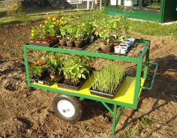

I’ve thought about building a small greenhouse for a long time. One day, when I was at a surplus auction, I saw a bus stop shelter for sale and had a great idea - that could be my new, small greenhouse. I paid $750 for it. I knew the tempered glass alone was worth that much.
Over the next few weeks, I converted the shelter into a small greenhouse. I added vents along the bottom, then filled in the bottom of one entrance and installed an automatic vent opening at the top. In the other entrance, I installed a hinged door.
Initially, I was worried about the acrylic, domed roof. Would it let in enough sunlight for the plants to grow? Before installing the roof domes, I had placed them on the grass for several weeks. At the end of that time, the grass under them was much taller and greener than the surrounding grass. So it turns out that the white acrylic domes make a perfect greenhouse roof. They’re virtually hail-proof, diffuse light and provide protection from the intense sunlight during the summer.
If you want to build your own small greenhouse, here are six suggestions from my experience.
Maintaining an appropriate temperature in a small greenhouse can be time-consuming. Some greenhouses have doors and windows that are opened manually when the outside temperature rises. By installing automatic vent openers, you can drastically reduce the time you spend with climate control. These temperature-controlled devices have a metal cylinder containing a mineral that expands when heated. This pushes a piston to open the vent. As the temperature drops, the mineral shrinks and a spring closes the vent and resets the piston. These vent openers do not require electricity.
There are many automatic vent openers on the market today. I installed the Bayliss Triple Spring MK7 Vent Opener, which has three heavy-duty springs to give the opener superior closing power, making it ideal for sidewall vents and roof vents in windy areas.
Adequate airflow is important for raising healthy plants. The benefits of air movement are stronger stems and branches, improved plant height regulation, and more resistance to insects. I use two approaches to air circulation. On cold days, I turn on an oscillating fan. On warmer days, I move the plants outside to take advantage of wind. Even on days that seem calm, the wind still might be blowing 5 to 10 mph.
There’s a trade-off between heat and air circulation. The energy required to operate a fan is much less than the energy required for heating. The extra 10 to 20 degrees Fahrenheit inside the greenhouse may outweigh the benefits of exposure to outside wind. This is especially true for plants such as tomatoes, which really thrive at temperatures between 70 and 90 degrees and so are best kept inside on cool days.
Whether you’re moving plants to take advantage of wind or moving plants inside your house to avoid freezing, some type of cart can simplify the process. A nursery cart can even serve as a greenhouse: Move the nursery cart outside when temperatures warm up, and wheel it back inside when temperatures cool down.
Shelves inside the greenhouse increase the usable space and make it easier to water, transplant and rotate the plants. However, I also recommend utilizing shelves and tables outside the greenhouse. On warm days, I move the plants to shelves outside to take advantage of the wind.
A close water supply will be helpful when transplanting or watering plants.
There will be days or nights when the forecast will be for temperatures near freezing. Without a heater, you have two choices: Risk plants freezing, or move the plants to a warmer area. Even if you only have 20 containers of plants, moving them can be time-consuming. An inexpensive solution is to use thermostatic outlets. These unique devices plug into a standard electrical outlet (or extension cord) and have an internal preset thermostat. The switch supplies power when the temperature gets down to 35 degrees and shuts off when it warms to 45 degrees. This is an easy way keep the greenhouse temperatures above freezing without wasting energy.
The thermostatic outlets cost about $20 each and electric heaters start around $30. When temperatures dip well below freezing, we bring the plants inside our house and turn off the heater. But on questionable days or nights, we leave the plants in the greenhouse with the heater plugged into the thermostatic outlet.
One of the greatest joys in owning a small greenhouse is closing the door and entering you own private world, free from the worries and the cold weather outside. There is something comforting about entering a greenhouse.
What other types of structures have you converted (or dreamed of converting) to a greenhouse? Share your ideas in the comments section below.
|
BILL ROSENER This small greenhouse was made from a former bus stop shelter. |
BILL ROSENER Adding shelves to the greenhouse increases capacity. |
 BILL ROSENER A nursery cart can be used instead of a greenhouse - wheel the plants outside during warm weather and bring them inside overnight or in cold weather. |